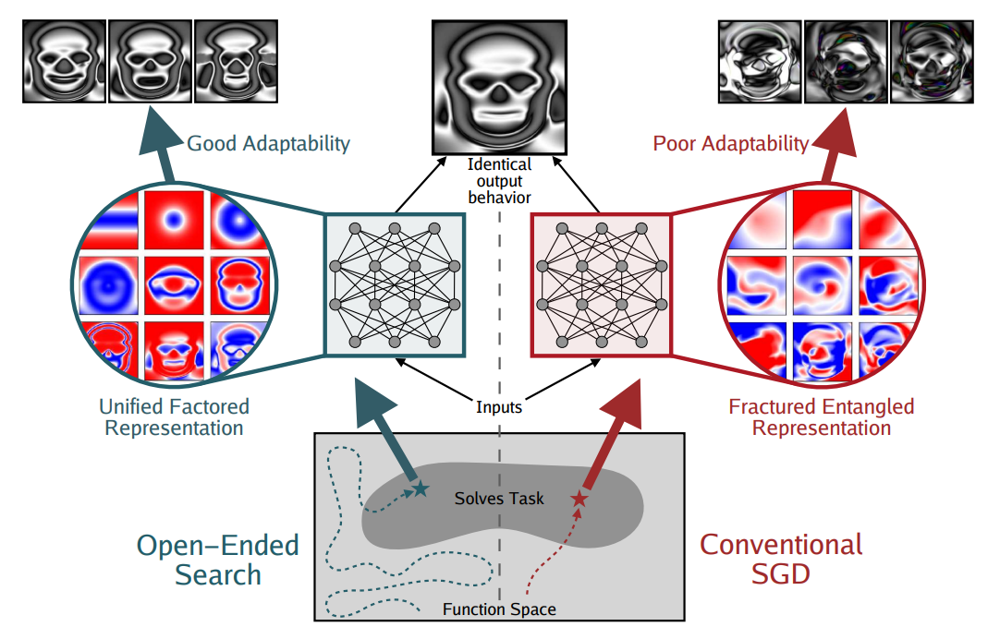
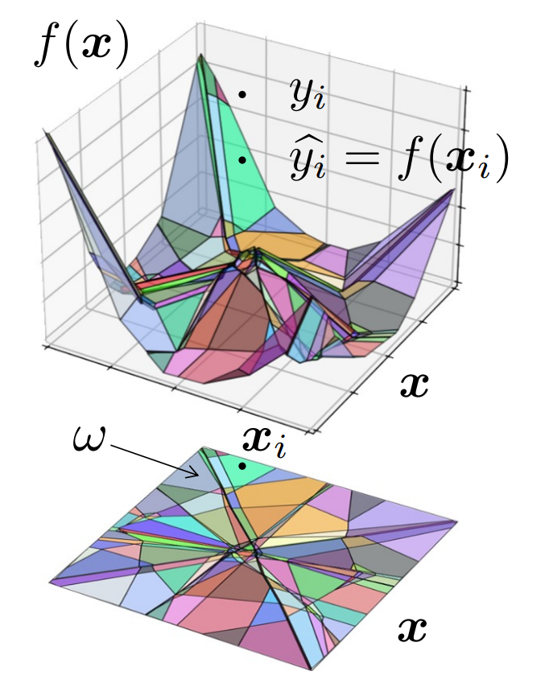
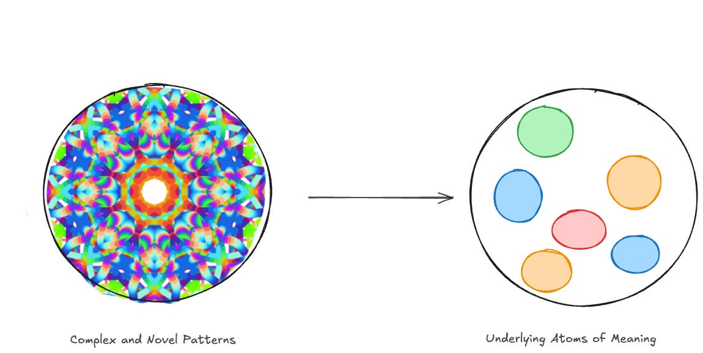
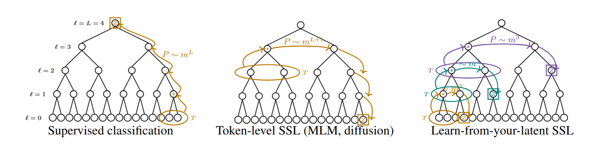

Abstract
Current AI systems are unbelievably impressive, but I keep wondering how much of their progress reflects deeper understanding and how much comes from scaling and better scaffolding. Using ARC-AGI as a starting point, I try to explain why I think understanding requires two things: deep, reusable abstractions AND reasoning that respects the right constraints. From there, I explore whether latent-space prediction and a learned, compositional library of constraints—something like an “epistemic tree”—could help models search, adapt, and learn more efficiently. These are high-level ideas, not a tested solution. I am writing them down to sort out my own thoughts and explain which research directions I find interesting, and why.
This essay presents my personal perspective and research interests. It is not a peer-reviewed publication, and some arguments are intentionally exploratory.
Abstract generated with AI. The essay was written by me, with AI used only for corrections.
A Note Before Starting
Before anything else, I feel that it is VERY important to address the elephant in the room: I am just a Master’s student. I do not yet have a lot of experience in the field of AI. I have worked on some private and university projects and spent seven months working as an AI engineer (as a working student) at a company. So, I do not have a “lot” of experience, and I want to include this big disclaimer at the start so that I do not sound overly “confident” or pretend to be somebody I am not.
With this in mind, I have been deeply interested in AI for the past four years. I do, indeed, read papers in my spare time for fun (sounds crazy, I know). I listen to podcasts about AI nearly every day and have done so for the past two years. I have listened to almost all the podcasts on MLST (Machine Learning Street Talk) and watched countless other long-form videos. I know this may sound unprofessional, but it is true: that is where a lot of my understanding and many of the connections I make come from. Professors from different disciplines (machine learning, neuroscience, cognitive science, mathematics, complexity science, biology, evolutionary science...) discuss the same concepts and ideas from their own perspectives and through their own lenses.
Why am I writing all of this? I hope to (1) sort out my own thoughts and intuitions about these high-level, abstract topics and (2) provide a hopefully coherent image of my personal perspective, including where it came from, for other people to understand.
Motivation and the ARC-AGI Challenge
Very early on, even before my first Master’s semester had started, I was drawn to the ARC-AGI challenge (Chollet 2019), probably through the influence of Dr. Scarfe and MLST (Machine Learning Street Talk 2026b). With this challenge, introduced by François Chollet in 2019, he essentially tries to create a proxy (benchmark) for measuring human-like general fluid intelligence. In my own words, he defines intelligence as skill-acquisition efficiency (Chollet 2019): not, in absolute terms, how good a system is at any particular skill, but rather how efficiently, in terms of data, compute, and time, a system can acquire novel skills. For me, this benchmark is one of the few that really tries to address the underlying big question of how to make models more generally intelligent. That is why I feel drawn to it. It’s like the biggest and most exciting question there is: How can we make generally intelligent machines that truly understand?
An Introduction to ARC-AGI
This benchmark now has three versions and has received much more attention in recent years due to advances in SOTA AI systems. Very briefly, ARC-AGI-1 was designed as a static visual input → output mapping problem (ARC Prize, Inc. 2026). For each new task, you encounter a completely novel mechanic governing the underlying transformation and receive just a few examples from which you must generalize that mechanic or rule. Importantly, this presents a problem for classical deep-learning approaches, where we rely on SGD-based iterative imitation learning over many samples from a given data distribution. In the ARC setting, we can view each task as its own separate distribution. Although the representation, a grid of colors, is the same across tasks, the underlying mechanic is novel and out of distribution (OOD) to each other.
The second version of this benchmark, simply put, expanded the setting by introducing compositional stacks of rules in each task to further test multi-step reasoning.
The third version (ARC-AGI-3) goes a step further and changes the static input → output format to an interactive, turn-based (agentic) setting. It provides different environments/games, each with multiple levels. These retain, to some extent, the low-level visual representation of a colored grid, the novelty of the games, and the compositional stacking of mechanics from the two predecessor versions. ARC-AGI-3 goes further by removing the few-shot example format and replacing it with a curriculum-like level design for each game, in which the agent needs to infer (1) the mechanics and (2) the goal, which is not given. This should test the ability of an agentic system to explore the world, infer unknown goals, build internal models of environmental dynamics, and plan effective action sequences without explicit instructions, solving each level and game as action-efficiently as possible. Systems are scored by comparing their action efficiency with that of human players to measure how fluidly intelligent they are. The creators therefore chose human performance as the scoring reference, using humans as a proxy for measuring “full” general fluid intelligence.
Sorry for this long explanation, but I think it is fundamentally important to understand this benchmark and how AI systems are solving it right now in order to separate identify the fundamental problem with current SOTA AI systems.
How I See the Current AI Paradigm
Before looking at how current AI systems are performing on the latest ARC-AGI benchmark, let us take a look at the systems’ progression over the first two versions leading up to this.
From ARC-AGI-1 to ARC-AGI-3
Performance on ARC-AGI-1 did not improve for a relatively long time, which could be attributed to a lack of interest as well as the benchmark’s difficulty. Test-time adaptation (Akyürek et al. 2024) eventually emerged as a breakthrough technique for making substantial progress on this first version, and performance improved even further when test-time compute methods such as CoT were introduced. In a nutshell, this showed that continuous adaptation of weights at inference time, or models’ own self-conditioning through “so-called” thinking traces (see Appendix A for why I write “so-called”), gave the systems a certain degree of fluid intelligence. These methods, combined with RL post-training, led to the largest improvements on ARC-AGI-1.
ARC-AGI-2 proposes a much more difficult setting for both humans and AI. However, the test-time methods mentioned above, together with scaled-up RL post-training using methods such as reinforcement learning with verifiable rewards (RLVR) (Lambert et al. 2024) and RL algorithms such as GRPO (Shao et al. 2024), enabled models to generalize over reasoning traces rather than the literal task data. This has increased fluid intelligence, and, as a proxy, ARC-AGI-2 scores, to some extent, but perhaps not as much as the benchmark results suggest. This takes us into more speculative interpretation, but many researchers in the ARC-AGI community, including members of the ARC Prize team, believe that major SOTA AI labs intentionally or unintentionally engaged in “benchmaxxing” on ARC-AGI-2.
Benchmaxxing and Scaling Around the Problem
(1) What is “benchmaxxing”? (2) Why is it a problem? (3) How did they do it? First, “benchmaxxing”, in my words, is the attempt to increase a benchmark score at all costs, essentially overfitting to a hidden test set. This means optimizing for the benchmark as a proxy rather than for the underlying ability it should measure. Second, this is a problem because, as with every benchmark, the test score itself should not become the target. It may be possible to find some mechanism that achieves a good score, but that is not the point, at least for a researcher. The benchmark serves as a proxy for an underlying ability that we want to measure in a system. We could imagine generating many very different proxy benchmarks that measure the same underlying ability. A system that has overfitted, or been “benchmaxxed”, on one of them WILL NOT generalize to the others. That is the real problem: we want abilities, not scores. As Goodhart’s Law states: “When a measure becomes a target, it ceases to be a good measure” (Wikipedia contributors 2026a). Third, at a very high level, I think the following happened: millions of ARC-like examples were generated synthetically, an RL environment with an automatic verifier was built, and the model was trained in it using RLVR post-training techniques at scale. This essentially “clusters” a wide range of solutions in the “ARC data space” and enables models to generalize to the “rest” of what is asked in the test set at test time. That is the problematic aspect of the ARC-AGI-2 benchmark score. However, it is not black and white: SOTA systems have made some progress toward more fluidly intelligent systems, just perhaps not as much as their claims suggest.
A small note on the whole “benchmaxxing” theme: one could argue that, by doing this, we really do acquire the ability represented by the underlying proxy for this one test and could therefore do the same optimization for all other proxies as well. To that I would say: yes, that is not wrong. It is a way forward, but a very inefficient one. It is like scaffolding the ability onto the model after a new benchmark appears. You always play this cat-and-mouse game, and that is not what we want, in my opinion. Yet this is what is happening in the industry on a much larger scale. We create ever more harnesses and scaffolding around base models to give them the ability to solve particular problems, one problem at a time. This actually works, as empirical results show, but I do not think it is a good way forward. It is a bit like “Good Old-Fashioned AI”, with its expert systems engineered to solve specific problems. However, as Rich Sutton’s “Bitter Lesson” (Sutton 2019) indicates, more general approaches do outperform specifically designed ones. This is, of course, my personal interpretation. Going one step further in this philosophical or metaphysical direction, I think the idea that simple, general methods beat specific, complex ones could be due to an inherent Occam’s Razor bias (Wikipedia contributors 2026b) in the nature of complex systems. This is also why I think we need to be more exploratory and less exploitative in research, perhaps by trying fundamentally different approaches and changes at the algorithmic level, including training methods and architectures. I will discuss this and my ideas in more detail later.
ARC-AGI-3 tries to address this “benchmaxxing” challenge in several ways: by making the private-set distribution more unique, moving to interactive games that create a larger solution-search space, and human relative scoring. Its creators also made the decision not to officially evaluate solutions that use a specific ARC-AGI-3-designed harness. Instead, they try to evaluate frontier models within their general-purpose harnesses, which should prevent or at least slow the “benchmaxxing” phenomenon to some degree.
At the time of writing, ARC-AGI-3 presents a difficult challenge even for frontier AI systems. However, much of the recent progress seems to come from increasingly capable “all-purpose harnesses”. These harnesses provide tools, memory management, subtask allocation, and other specialized capabilities. Together with RLVR post-training and increasing amounts of test-time compute, this produces empirically strong scores. This is fascinating and very impressive, it actually works, and these systems do show a degree of fluid intelligence, although at the cost of a LOT of data, compute, and money. In my opinion, this is largely an exploitation of the current paradigm, using better scaffolding to build on existing capabilities and improve benchmark-specific performance. As ARC-AGI-3 has grown in relevance, there is also an economic incentive to achieve better scores, which makes it increasingly difficult to separate purely scientific progress from benchmark optimization...
In the following section, I want to describe my own position on what could be the problem with SOTA systems and what a more exploratory research direction could look like, so to address the root cause rather than treating the symptoms.
My Position
Understanding requires constraint-respecting reasoning with deep abstractions.
I would argue that this is a fundamental problem with SOTA systems because they (1) do not have sufficiently deep abstractions and (2) do not respect the right constraints of reality when using them. Understanding requires exactly these two things: deep abstractions AND respect for constraints. SOTA systems have this ability to some extent, but not enough to be human-like, so they compensate for what is missing with harnesses and scaffolding around the model, together with a ton of compute and data.
Deep Abstractions
To my first point: by “no deep abstractions”, I mean that these systems have more or less learned “surface-level” connections or correlations among the abstractions presented by language. This may seem to contradict what one “usually” learns in introductory deep-learning courses, where we are told, for example, that CNNs build increasingly abstract features as the network becomes deeper: from edges and corners, through facial features such as eyes and noses, to a representation of the full face. This is then demonstrated by visualizing a network’s feature maps. This is not wrong, it is simply not the full picture, in my view. The different layers do build internal abstract representations, but these are more like fractured, entangled representations (Kumar et al. 2025) than deeper, compositional abstractions (see Figure 1).

I find a geometric view of deep learning particularly helpful for thinking about the internal representations of network layers and abstractions (Balestriero et al. 2024): each layer learns a multidimensional affine-spline partitioning of the space (see Figure 2). The models therefore do learn representations, some of which look like interpretable features, but these representations are more fractured and entangled. Kumar et al. make a similar argument in their paper on questioning representational optimism in deep learning, where they compare representations created through SGD with those evolved through human guided open-ended search (Kumar et al. 2025).
One could ask: Why should I care? If the output is correct, does it matter what the internal representations look like? I would argue that the PATH to the solution should matter as much as the solution itself, as Kenneth Stanley also writes in Why Greatness Cannot Be Planned (Stanley and Lehman 2015). For a concrete example, let us briefly return to the ARC-AGI-1 and ARC-AGI-2 benchmarks. Research by Lee et al. (Lee et al. 2024) showed that LRMs can produce correct answers on an ARC-AGI task despite incorrect pattern inference, that is, despite using the wrong abstractions in their CoT. They therefore use flawed reasoning but still reach the right answer. I would say that this is not what we want, because such flawed reasoning will not generalize to new examples. In my opinion, this could indicate that the models lack deeper connections between abstractions, or understanding.

Working Definitions
I will roughly define what I mean by “abstraction/concept”, “reasoning”, and “understanding” in this context, in a more metaphysical and philosophical sense.
I use abstraction and concept somewhat interchangeably here. For me, an abstraction is a representation within a context, because the same representation in a different context could correspond to a completely different abstraction. By context, I mean the entire “world state” around it: not only nearby pixels or text, but also factors such as one’s objective, task, and understanding of the subject (“everything is a nail if you are holding a hammer”). This could involve seeing different representations as instances of the same abstraction or, conversely, seeing the same representation as different abstractions, depending on the context. To paraphrase Prof. Anton van den Hengel in an MLST Patreon interview: the real world consists of continuous phenomena, there are no inherently discrete trees, chairs, or fish, everything is part of a continuous spectrum. “We draw just artificial lines that are context-dependent in order to give us ‘handles’ on these objects so that we can communicate (and think) about them.”1
For me, reasoning is a lot like planning: finding a way “to achieve a goal”. There are many ways to reach the same destination. To “reason” is a process in itself. This idea applies to optimization, as in Kenneth Stanley’s Picbreeder experiment (Kumar et al. 2025) (see Figure 1), as well as to the ARC-AGI benchmarks, where different incorrect lines of reasoning can still reach the right final goal or output.
By understanding, I mean finding a line of reasoning that uses the right abstractions, context-dependent, deep building blocks, to produce a grounded, constraint-respecting, and reusable way to achieve an objective, one that generalizes both in distribution and OOD. That is why we humans are so good at fluid intelligence and adaptation: we create coarse-grained abstractions about the world that inherently respect constraints, and we can reason with, compose, and adapt them in novel ways. We can therefore generalize to OOD scenarios with relatively little data.
→ Understanding is therefore not simply “acquired”, it is synthesized by identifying core abstractions and constructed by fitting them into the causal “epistemic tree” of one’s own knowledge and experiences → constraints.
What do I mean by an “epistemic tree”? This is not a formal idea. It is more of a new concept that gives us an abstraction for discussing deep conceptual models of how intelligence organizes knowledge. I do not know where the idea originated, I first heard it from Dr. Tim Scarfe, host of the MLST podcast (Machine Learning Street Talk 2026c). The core intuition is that knowledge is hierarchical compression: a hierarchical structure of concepts in which higher-level nodes are compressed, reusable abstractions built from lower-level patterns. The “epistemic tree” is therefore the idea that intelligence builds a hierarchical, reusable library of abstractions that compresses reality and drastically reduces the search required to solve new problems (e.g. Prediction). Higher up this tree, for example, we might find symmetry, invariance, compositionality, objectness, causality, continuity, and topology. I find this description of an “epistemic tree” very fitting, especially for what follows.
I also want to mention François Chollet’s Kaleidoscope Hypothesis, introduced in a NeurIPS 2020 talk (Chollet et al. 2020; Palermo 2021), because I think it brings abstractions and generalization together nicely. In short, the Kaleidoscope Hypothesis suggests that the apparent complexity of the world is rooted in a subtle simplicity (see Figure 3), just as a kaleidoscope can produce complex and novel patterns from the same simple core pieces. Chollet therefore suggests that true intelligence is not task execution, or skill, but the ability to extract reusable abstractions from experience and reuse them to learn faster, skill acquisition. In my interpretation, he is talking about “finding” those core pieces, connecting deep abstractions to one’s own “epistemic tree” of constraints. These abstractions generalize to novel in-distribution tasks and also accelerate transfer to previously unseen, out-of-distribution tasks. This is what real intelligence is about.

Returning to the main topic, why do I think that SOTA models lack sufficiently deep concepts or abstractions? Keep in mind that this is all speculation, but I think it may stem from the token-level objective on which they were trained: the next-token-prediction paradigm. Early, more theoretical work on sample complexity by Korchinski et al. (Korchinski et al. 2026) appears to point in the same direction. Matthieu Wyart, one of the co-authors, also discussed this in a recent MLST interview (Machine Learning Street Talk 2026a).
He describes it roughly as follows: information about a low-level feature, such as a token or pixel, within its context must travel up the hierarchy of abstractions. At each higher level, exponentially less data, and therefore less learning signal, is available for each higher-level concept (see Figure 4). This creates a need for ever more data. It may explain why scaling improves the current paradigm’s results when using a token-level SSL objective, but at the cost of enormous amounts of data and compute (Korchinski et al. 2026; Machine Learning Street Talk 2026a). As an alternative research direction, I think Yann LeCun’s work on Joint-Embedding Predictive Architectures (JEPAs) points in a similar direction: latent-space prediction may be more sample-efficient than token-level objectives. He similarly argues that latent prediction captures higher-level structure rather than spending capacity on modeling low-level details (LeCun 2022).
These are some hints from recent literature about what the problem might be and where one could look for an alternative approach. This is simply what I find interesting about addressing the “no deep understanding of concepts” problem. Other approaches exist, and I do not know which is right, I simply find the “predict latents, not tokens” paradigm very compelling. There are already some smaller experiments in this direction. For example, in the Orca: The World Is in Your Mind paper (Wang et al. 2026), the authors apply a JEPA-like architecture to a generative model.

Constraints
In my first point, I argued that SOTA systems do not have sufficiently deep abstractions. In my second point, I want to explain why I think they do not yet inherently respect the right constraints. A SOTA system may, for example, fail in a particular ARC-AGI-3 environment because it does not recognize that it is dealing with a maze-like task. If we constrain the system by adding “it is a maze” to its prompt, it implicitly uses the constraints that it has learned to associate with this abstraction and can solve the task more easily. For these systems, however, identifying the right constraints is the difficult part. As with abstractions, I think the constraints they learn are too superficial and too dependent on specific tokens and the contexts in which those tokens appeared most often.
To state briefly how I would define constraints in this context: they are the implicit assumptions about the world that we connect with a particular abstraction in a given context. A constraint is therefore more like a hypothesis or a note in one’s “epistemic tree”. Using an abstraction gives us not only a concept but also a whole set of surrounding assumptions that we consider true or false. For me, constraints are these implicit assumptions about reality that accompany abstractions and restrict which interpretations, lines of reasoning, questions, or actions make sense in a given context.
In my opinion, today’s systems lack these abilities because their constraints are currently “just” implicit. Different tokens establish different constraints because they are used in their respective contexts, as in my earlier “it is a maze” example. They therefore DO bring constraints with them when a model generates a line of reasoning. Another way they incorporate constraints is through harnesses and scaffolding around the models, which ground the system in reality (Ndea 2026). As with my first point, I would say that these constraints, learned through correlations and the occurrence of tokens in particular contexts, are too “shallow”, because the amount of data needed to model these correlations grows exponentially as we move up the “epistemic tree”. Consequently, these systems respect some constraints within specific fields, but only at a “surface level”.
Side note:
This is, in my opinion, why experts can work with agents much more efficiently and gain a productivity boost that non-experts attempting to solve the same problems do not receive. Experts DO add their deep domain understanding, their own learned, internal “epistemic tree”, as constraints in every interaction with an agentic system. Because of this, I think claims such as “with vibe coding, anyone can now build any software” or “we do not need experts anymore, AI is good enough, just look at this benchmark” are simply wrong, at least for now. AI is a very impressive tool, but it requires a human expert to steer it in the right direction.
Conversely, this is also the reason for “AI slop”: it is what happens when an artifact is generated without path dependence, understanding, or respect for constraints.
As Turing Award winner Robert Tarjan said: “Asking the right question is more important than finding the answer. To be a really great researcher, you have to develop a certain kind of taste.” Taste, a nose for what is interesting, is what the human brings to the collaboration. (See the MLST paper, p. 32 (Budd and Scarfe 2026).)
Recent successes with LRM harnesses and scaffolding are fundamentally ways of adding constraints to the generation process by imposing external structure that guides generation toward coherence.
That is what I meant at the beginning: we make them act as if they had such deep structural understanding. This is what I mean when I say that “we try to find workarounds for the problem instead of addressing it”.
I think the problem is that this respect for constraints is not inherent in the models themselves. If we do not solve this, we will always be playing this “cat-and-mouse” game.
A Possible Research Direction
One possible solution would be to integrate a more explicit mechanism that conditions the model not only on abstractions, represented as tokens, but also on internally learned constraints. Perhaps this additional conditioning of the generator would allow the model to learn deeper connections, higher up the tree, more quickly and data-efficiently. Such a library of constraints could mimic the “epistemic tree” and be used to construct or search paths through different levels of abstraction. It could thereby act as an inductive prior, constrain the reasoning process, and shrink the search space.
This could give models an inherent ability to search over different constraints before making a prediction, while also performing world modeling, planning, and evaluation. It could enable hypothesis testing and counterfactual reasoning and therefore support a better understanding of the world. How such systems should be trained remains, for me, a completely open question.2
To make my idea clearer, imagine a system that combines DreamCoder’s library learning and sleep/dream phases (Ellis et al. 2020) with the latent abstractions of the Latent Program Network (LPN) (Macfarlane and Bonnet 2024). It could build an internal library of latent constraints that conditions a generative model. This library could be learned, extended, adapted, and searched at test time, allowing the system to learn continuously and adapt to novelty more quickly. The learned constraints could be organized compositionally, recombined, and reused. For example, an evolutionary objective could reward shorter, more generally useful constraints, an Occam’s Razor bias (Wikipedia contributors 2026b), and penalize an excess of fine-grained, specific ones. This might produce a library of generalizable and a bit more disentangled representations. Such a library could enable faster in-distribution learning and better generalization to novel OOD scenarios because its constraints could be searched, adapted, and created on the fly to restrict the output search space before answering.
Together with a latent-prediction objective (Maes et al. 2026; Korchinski et al. 2026), could this potentially give the model deeper, constraint-conditioned abstractions. It could be implemented in a LeWorldModel-style system (Maes et al. 2026) combined with a “neuro-symbolic-ish” library of compositional latent constraints.
At inference time, a mechanism could use the world model to predict what effects the next actions would have, given a particular hypothesis about the constraints in the current context. A framework such as Karl Friston’s active inference (Friston et al. 2025) could help distinguish between hypotheses and unify perception, action, and learning in a single loop. This could help the system model decisions under uncertainty, actively shape the world and its subsequent observations through action, and maintain hypotheses about hidden causes through alternative sets of constraints, different paths through the model’s own “epistemic tree”.
That is just one way I can imagine making these abstract ideas more concrete. I do not know how these constraints could be learned, whether an SSL signal combined with an evolutionary or RL objective would be sufficient, or whether something else is missing. These are “just” very high-level ideas that I find interesting.
Closing Thoughts
To round everything up, I think that this more explicit way of learning constraints, searching, creating, adapting, and composing them, could condition the generative model in addition to its input and allow for world modeling and hypothesis search before answering. Together with deeper abstraction learning through latent-space prediction, this could potentially address the root cause and represent a step toward models with real understanding. That is why I am personally so interested in AI and in the ARC-AGI benchmark specifically.
That’s my position: Understanding requires constraint-respecting reasoning with deep abstractions.
One reason I think that writing down these very high-level thoughts could be useful comes from the biologist Michael Levin. In an interview (Machine Learning Street Talk 2024), he discussed how different, almost philosophical, views of a problem can substantially affect the actionable research directions a researcher takes, and he has seen this happen in practice. I find this fascinating because how one thinks about a problem at this meta-philosophical level changes how one understands the problem itself. This can lead to theories, experiments, and approaches that one might otherwise never have considered. That is my “justification” for writing these ideas down, even if they are currently very high-level and barely more than intuitions.
Finally, I want to add again a BIG disclaimer: all of these ideas and theories are simply my interpretation and understanding of what is happening. It is entirely possible, and likely, that I am partially or completely wrong about some of these things.
I also want to acknowledge that I “talk down” SOTA AI systems a LOT here, so I want to clarify: SOTA systems are genuinely and unbelievably impressive, and most importantly, they actually work! I am presenting thoughts and theories here, without having empirical evidence to back this up.
Thank you for reading. I hope I have made my perspective understandable.
Appendix
A: Let’s Just Not Anthropomorphize Too Much
One thing that bothers me about “mainstream” AI research communication is that we use too much anthropomorphic language. I know that metaphors and abstractions are important for discussing systems and making them understandable, but I think we should use them more cautiously. The general public sees models that perform extremely well on PhD-level tests and communicate in human language. On that basis alone, people attribute other human traits to these systems, not only capabilities they genuinely possess, but also implicit ones, and are then surprised when the systems cannot do simple things such as count the letter R in “strawberry”. In my opinion, this creates a false perception of these systems that is decoupled from reality and may cause problems down the road. The situation is made worse when we overuse human-like, anthropomorphic language to describe how these systems work.
Here is an interesting paper that discusses this problem: (Ibrahim and Cheng 2025)
References
For related metaphysical context, see the talk from Michael Levin’s Platonic Space symposium (Foster 2026).↩︎
By “world modeling”, I mean world models that predict the consequences of actions in an environment. I do not think world models have to represent the three-dimensional physical world or a video-game environment. As Michael Levin said, the important point is that the perception–prediction–action loop affects the same world that the senses perceive (Machine Learning Street Talk 2024).↩︎